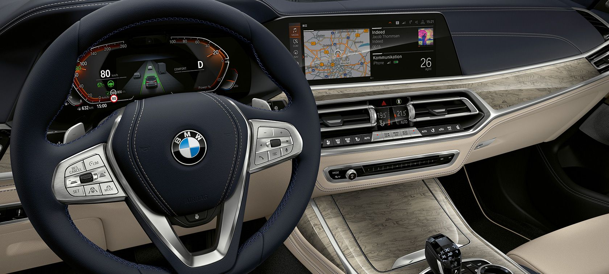
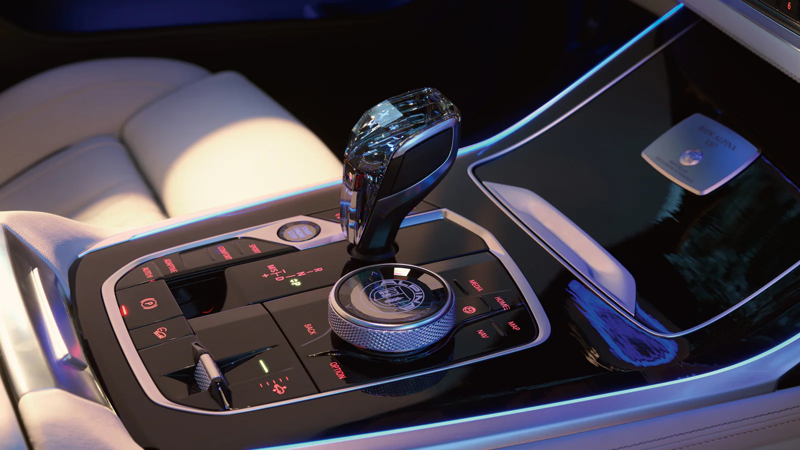

.jpg)
The exterior and interior design of the new BMW X7
As soon as you set your eyes on the new BMW X7, you feel its confident presence and power, which is acquired thanks to a variety of surfaces with generous dimensions and refined design lines that give it unparalleled luxury and elegance. At the heart of the cabin, the Sports Activity Vehicle (SAV) is more spacious than expected, and in turn, luxurious decor elements, innovative relaxation functions and comfort features create a refreshing and unique ambiance.
Interior Design
Ultra-Modern Controls:

The comfort that accompanies the BMW X7 reveals itself even when entering the car, as the digital key eliminates the use of the traditional key to enter>BMW Personal CoPilot Personal Assistant, ConnectedDrive Services, Contribution, Distance, Distance, Distance and Distance. And at the same time, the current education system.
Bespoke Style:

Optional Glass Controls on the gear shifter and engine start button accentuate the standard haptic feedback buttons surrounding the iDrive controller. Enjoy comfort crafted to the highest standards – yours. Available BMW Individual enhancements include the finest leathers, exclusive colors, and gorgeous interior trims, all custom added to your specifications.
| Number | Color |
|---|---|
| 1 | Alpine White |
| 2 | Black |
| 3 | Suber Black |
| 4 | Phytonic Blue Metallic |
The innovative equipment of the new BMW X7:
The exceptional comfort that accompanies the BMW X7 reveals itself even before entering the car, as the digital key completely eliminates the use of the traditional key for entry. Innovative technologies such as the driver assistance systems in the BMW Personal CoPilot personal assistance system, and other advanced ConnectedDrive services, help to enhance the joy while driving. Meanwhile, the leading educational entertainment system with hand gesture control is constantly being updated thanks to the remote software update feature.
You can search an shopping :
1: Online BMW 2: Online Cars
video